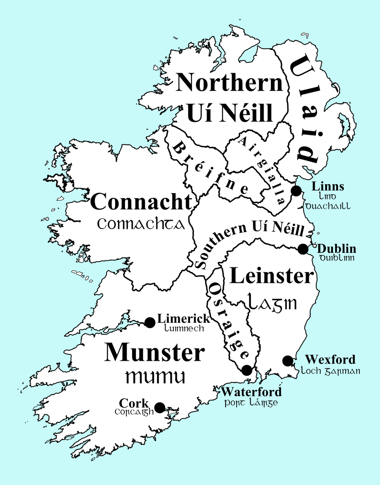

Rugadh Brian i Cill Dalua an 12ú páiste le Cennétig agus bhí Cennétig rí na Dál gcais.
Rinne a dhearthair Mathún margadh le na Lochlainnaigh i Luimneach.
Fuair Mathún bás ansin bhí Brian rí na Dál gcais.
Tá Brian rí na Muighainn.
Bhuaig Brian trid na Glenn Máma
Ag an t-am seo bhí Brian ard rí an haerann.
Chuaig sé go hArd bhaca.Scríobhadh "Impire na gael" air.
Chuaig sé agus a arm go trid na Cluain Tarbh.Bhuaig a arm ach bhfuair Brian bás san trid.
